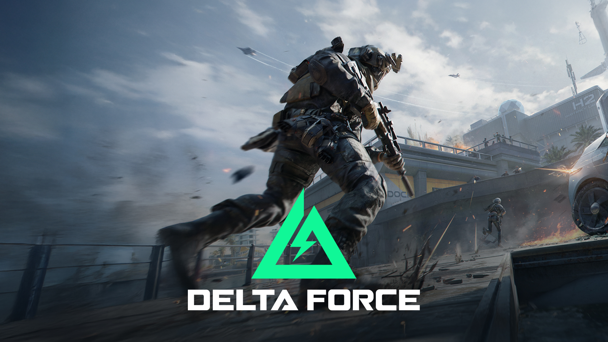

DELTA FORCE
-
Client
Team Jade
-
Date
30-07-2024
-
Project link
- Role: Technical Artist / Pipeline TD | Contractor
- Core Stack: Houdini (Solaris/Karma), Unreal Engine, USD, Custom Data Parsing, Render Management & AOVs | Contractor
- Main Focus: Mass Environment Porting (UE to USD), Large-Scale Instancing Optimization, Set Dressing & Lookdev, Render Pipeline Optimization
This project involved delivering a high-end, nearly 2-minute game cinematic for a tactical shooter within a tight 3-4 month window.
The primary challenge was reconstructing a massive, highly detailed native Unreal Engine game level inside Houdini's Solaris context.
The source data was unorganized and production-heavy, consisting of 600-800 unique assets instanced between 45,000 and 60,000 times—complete with materials,
props, decals, and foliage. I successfully built and executed a custom data pipeline to port and optimize this environment under USD, managing over 95% of the final on-screen set.
Additionally, I supervised the technical layout adjustments, final lookdev approvals, specialized render layer optimization, and editorial review conform.
-
Unreal to USD Environment Porting Pipeline:
Manually rebuilding the game map would have been impossible within the deadline.
I designed a semi-automated pipeline that parsed complex asset, material, and transform data out of Unreal Engine. This data was then ingested into Solaris, automatically reconstructing the entire environment under USD.
By preserving and utilizing the original transform data, all 60,000+ assets automatically snapped to their correct instanced locations. -
Large-Scale Scene Optimization and Instancing:
To keep the extremely detailed environment renderable and lightweight, I engineered the ingest tool to maximize USD native instancing.
This drastically reduced the memory footprint on the render farm and viewport lag, making a massive scene highly manageable for layout and lighting artists without sacrificing visual quality. -
Hero Asset Lookdev and Set Dressing Variations:
While 95% of the environment was automated, close-up "hero" shots required manual flexibility.
I structured the USD hierarchy to allow seamless overrides, enabling quick asset modifications, material tweaks, and custom lookdev adjustments when requested by the director. I was also responsible for executing layout changes on specific locations to better serve the cinematic's narrative and framing. -
Advanced Render Layers:
I managed the render pipeline and resource allocation, creating optimized render layers to prevent production bottlenecks.
Due to high artistic demands regarding glass reflections and refractive surfaces, I developed specialized technical AOV setups and custom utility passes to give the compositing team total control over complex material layers. -
Editorial Integration, Review Cuts:
I managed the preparation and formatting of daily review playblasts and conform edits.
This ensured that editorial changes were instantly updated, correctly color-managed, and perfectly aligned with the director's pacing requirements throughout the fast-paced production.